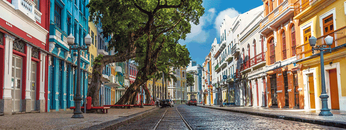

Recife Antigo

Um lugar com muita história, charmosas ruas de paralelepípedo que mantêm até hoje o caminho por onde circulavam os bondes, casarões e construções antigas que enchem os olhos e muita arte, cor e alegria. Estamos falando do Recife Antigo, o bairro que é o berço da capital pernambucana.